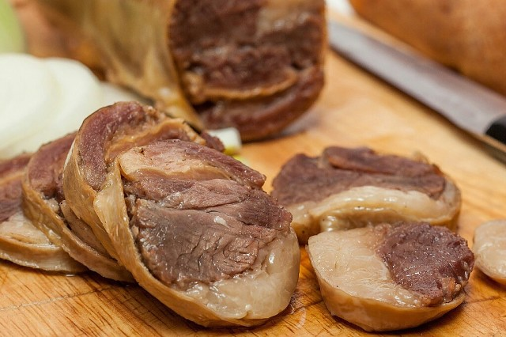

Шұжық
Шұжық жасайтын етті тұздап, бұрыш сеуіп салқын жерге 1-2 күн сақтайды. Шұжық жасауға сан, қол, жон еттерін алады, мойын еті жарамайды. Содан кейін майды да, етті де ұсақтап тұрап, қара бұрыш, сарымсақ қосып, бәрін араластырады. Бір жылқының ішегінен шұжық дайындау үшін 5 кг ет, 5 кг іш май, 10 г қара бұрыш, 50г сарымсақ салады. Барлығын туралған ет пен майға араластырып, содан кейін ішекке салып толтырады. Ішектің екі ұшын істіктеп түйрейді де, жіппен біріктіріп байлайды. Дайындалған шұжықты сырыққа немесе керілген жіпке араларын бір-бірінен алшақтау етіп іліп, 10-12 градус температурада 3-4 күн ұстап дегдітеді. Содан кейін түтінге 12-18 сағат ыстайды. Шұжыққа пиязды дөңгелектеп кесіп қосуға болады.
